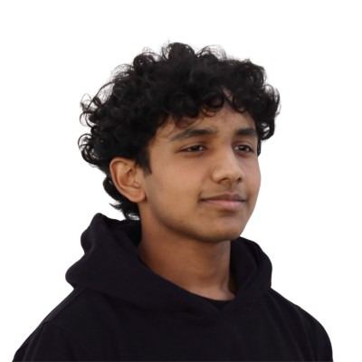
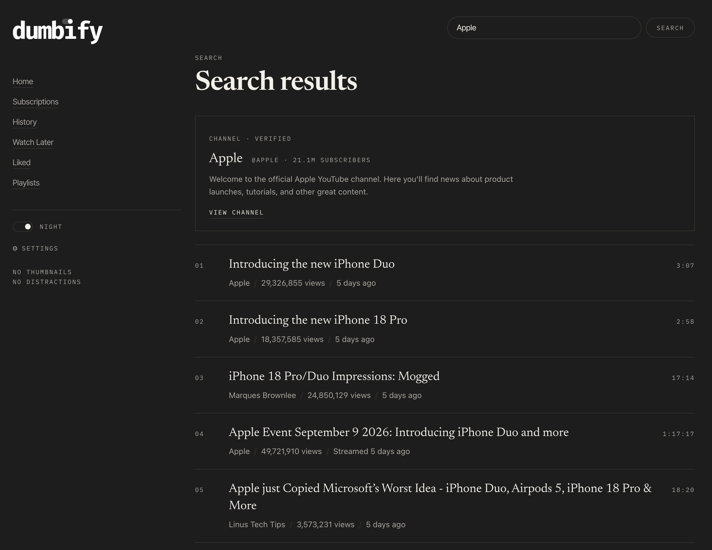

Eden Rebello /ee-duhn/also seen as ednrbednrb, edenrebel, edenvreb, edenrebello, edenvrebello
~/now: Dumbify
I'm super bullish on local-AI models’ ability to change the way we interact with computers for everyone, for free. I build open-source tools and learn about neural nets. I speedrun Minecraft in my free time.
education
University of Illinois Urbana-Champaign2027–2030
B.S. Computer Science, The Grainger College of Engineering
Dubai American Academy2022–2026
IB Diploma · 3.98 cumulative GPA
experience
Generative AI Research InternJul–Aug 2025
RuDo Wealth · Hybrid
Researched generative AI with the CEO; built a custom HeyGen avatar and used its API for onboarding emails.
Web Development InternAug–Sep 2024 RuDo Wealth · Hybrid Worked directly with the CEO on web app design changes, including a move to dark mode and a new color scheme.
- Built a compound interest calculator that updates its output live.
For a quick buck
Web Developer & SEOApr–Oct 2026 Elden Interior Design · Contract · Remote Designed and built the company site end to end: a static Astro site with a WebGL 3D rendering system.
- Wrote the SEO content strategy: long-form articles structured for search and AI answer engines (direct-answer headings, comparison tables, FAQ schema).
- Build-time image transcoding, self-hosted fonts, and lazy-loaded media and embeds for speed.
- Ran the content pipeline for case studies, testimonials, and journal articles.
Technical SpecialistMar 2026 Care & Cure Pharmacy · Contract · Remote Set up the pharmacy's online presence from scratch: domain, DNS, and a static site on Cloudflare Pages.
- Configured custom-domain email and forwarding, Google Business Profile, and social accounts.
projects
SahlNov 2026–now Desktop app · with Gabriel Tan · currently contending in the UAE Hackathon 2026 Looks at the form on your screen and tells you, in your language, which box comes next, then fills it after you confirm.
- Fully local AI: trained Qwen3 and IndraOCR to read the form on-device. Never logs in, never touches PINs or card security codes, never presses submit.
- Guides in English, Arabic, Urdu, and Malayalam. Open source.

DumbifyJun 2026–now Chrome & Firefox extension · with Gabriel Tan YouTube, without the noise: feeds become plain text lists, and autoplay, end screens, and "Up next" are gone. YouTube's own player stays.
- 19 themes, six finished looks, list, card, and table layouts, custom wallpapers, and settings export.
- Free, no ads, no server, no account. Open source under GPL-3.0.
YahmiOct 2026 Invoice fraud protection Protects UAE businesses and SMEs from phishing and invoice fraud.
- Checks an invoice before you pay it: IBAN and TRN validation, UAE bank codes, and warnings when the reply-to address doesn't match the sender.
PauseSep 2026 macOS app · CS50x final project A minimal eye-health app I made for myself: after an interval you pick, it covers every monitor with a full-screen break.
- Snooze pushes the next break back without changing the interval. Open source.